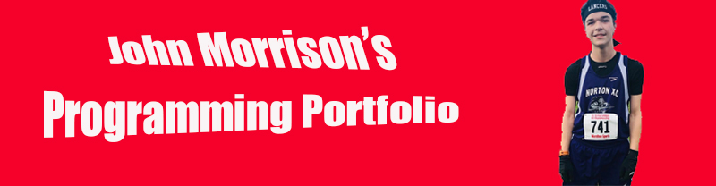

Welcome to John's Programming Portfolio
I'm John Morrison, and welcome to my CSC 106 portfolio. Here is where you can find all the work I've done in a collective site.
I'm really enthusastic about computer science and am eager to dive into the various coding techniques I will learn at URI.
I think the most important thing to know about Computer Science is that it's constantly changing. One day you learn how to code something and the next
day there's a new method for the thing you just created. Your ability to adapt and conquer hardships is what will determine success in this field.